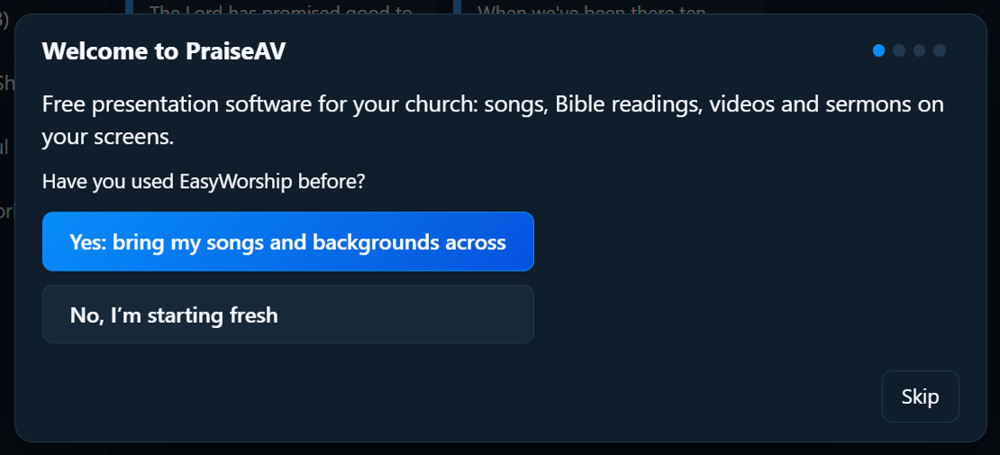
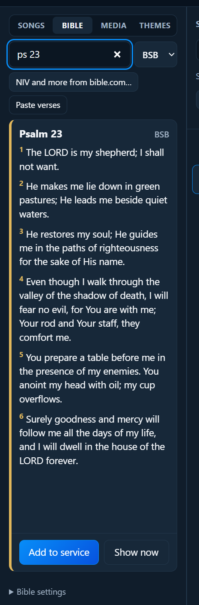

Start here
Your first Sunday
This guide takes you from nothing to a whole service on the screen. Take it slowly; you can’t break anything. Allow about half an hour the first time, ideally a day or two before Sunday.
You’ll need:
- a Windows computer or laptop (Windows 10 or 11)
- your projector or TV, and the cable to connect it (usually HDMI)
- if your church used EasyWorship before, the computer it was on
Step 1: Install PraiseAV
- Install PraiseAV from the Microsoft Store (search for “PraiseAV”), or from praiseav.com.
- Open it from the Start menu.
The first time it opens, PraiseAV says hello and asks a few questions. You can come back to them any time with Getting started… at the bottom right of the window.

- Used EasyWorship? Choose Yes, and PraiseAV brings your songs and backgrounds across. EasyWorship itself isn’t changed.
- Starting fresh? Choose No. PraiseAV comes with some well-known hymns to start you off.
Then type your church’s name and choose your logo (a picture file). The logo is what the screen shows when you press Logo.
Step 2: Plug in the projector
- Connect the projector (or TV) to the computer with its HDMI cable, and switch it on.
- Press the Windows key and P together, and choose Extend.
- PraiseAV puts the words on the projector by itself.
Check: the top of PraiseAV shows a green dot and Congregation. That means the projector is ready. If you’re unsure which screen is which, open Screens… and click Identify screens: each screen shows a big number. See Screens for more.
Step 3: Find your way around
The window has four columns:
- Library (left): your songs, the Bible, media (pictures, videos, music) and themes.
- Service (second): the order of today’s service, top to bottom.
- Slides (middle): the slides of whatever you’ve picked in the service.
- On screen (right): exactly what the congregation can see now, and what comes next.

Step 4: Build the service
Add songs. In the Songs tab, type a few words of the title or the words into the search box, then double-click the song. It goes into the service.
Add a Bible reading. Open the Bible tab, type the reference (short forms are fine, like ps 23 or jn 3 16-18), then press Enter.

Add the sermon. Click + Sermon at the top of the Service column. Type the title and the preacher’s name. If they’ve sent notes, paste them in; they’ll appear only on the preacher’s screen. See Sermons.
Change the order. Drag items up and down the service. To take one out, point at it and click the ✕.
Give it a name and save it. Type a name at the top of the Service column, like “Sunday 18 October”, and click Save. See Services to keep services on OneDrive or a USB stick.

Step 5: Practise
Before Sunday, run through the service once, even on your own at home:
- Click the first item in the service, then click its first slide. It appears on the screen, and the slide has a red border in PraiseAV.
- Press Next (or the → key) to move on. At the end of a song, Next carries on into the next item.
- Try Black, Clear text and Logo, and press them again to come back.
No projector at home? Open Screens… and click Open practice screens to see what every screen would show. See Screens.
Step 6: On Sunday
- Switch on the projector and computer early, and open PraiseAV. It remembers the service you were working on.
- Before the service, show your Logo (press L) or your notices.
- When the first song starts, click its first slide, then press Next at the end of each verse.
- Watch Up next on the right. It shows exactly what Next will put on the screen, so there are no surprises.
- Between items, press Logo or Black.
If something goes wrong
- The words aren’t on the projector: check Screens…, and press Windows key + P and choose Extend.
- Wrong slide on screen: click the right one; it changes straight away.
- Need a moment: press Black. Nothing is lost.
More in Troubleshooting. In PraiseAV, click ? Help at the top right (or press F1) to come back to this guide at any time.
Well done: you’re ready for Sunday.